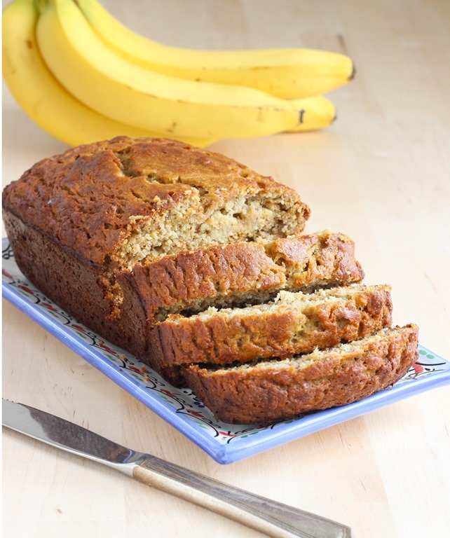

Banana Bread

Descripción
Un delicioso bizcocho de plátano, perfecto para el desayuno o la merienda, facil de hacer y con un sabor increíble.
Ingredientes
- 3 plátanos maduros
- 1/2 taza de azúcar
- 1 huevo
- 1/4 taza de mantequilla derretida
- 1 1/2 tazas de harina
- 1 cucharadita de bicarbonato de sodio
- 1 cucharadita de sal
Instrucciones
- Precalentar el horno a 175°C (350°F) y engrasar un molde para pan.
- En un bol grande, triturar los plátanos con un tenedor.
- Agregar el azúcar, el huevo y la mantequilla derretida, y mezclar bien.
- En otro bol, mezclar la harina, el bicarbonato de sodio y la sal.
- Agregar los ingredientes secos a la mezcla de plátano y mezclar hasta que estén bien combinados.
- Verter la masa en el molde para pan y hornear durante 60-65 minutos, o hasta que un palillo insertado en el centro salga limpio.
- Dejar enfriar en el molde durante 10 minutos, luego desmoldar y dejar enfriar completamente sobre una rejilla.
Volver al menú principal